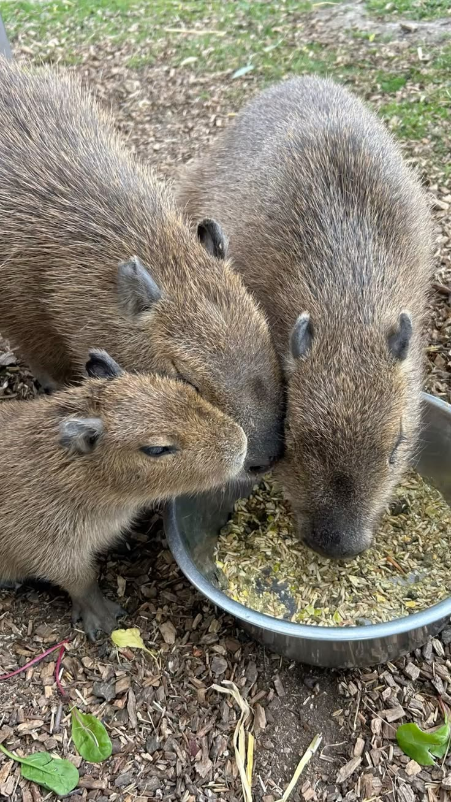
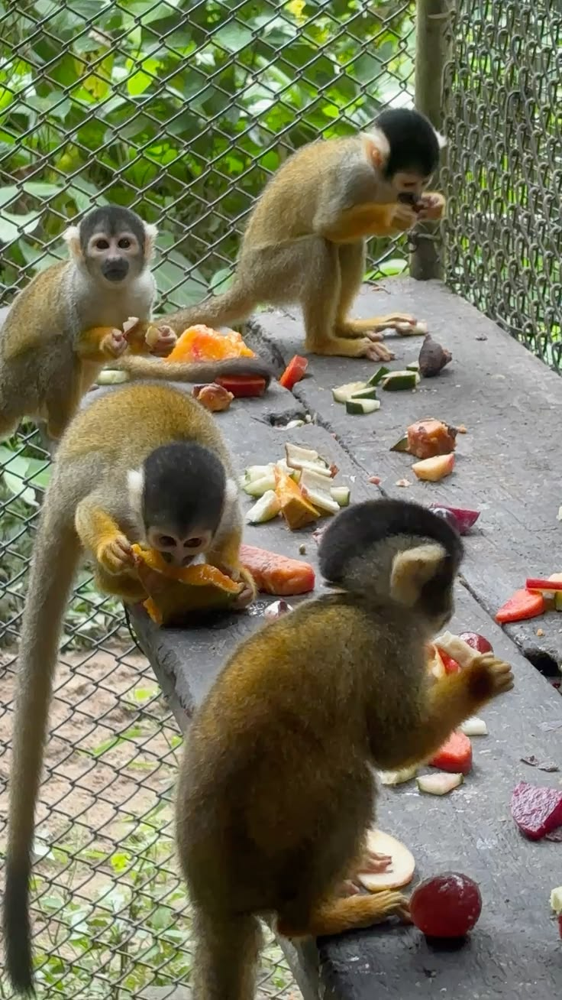
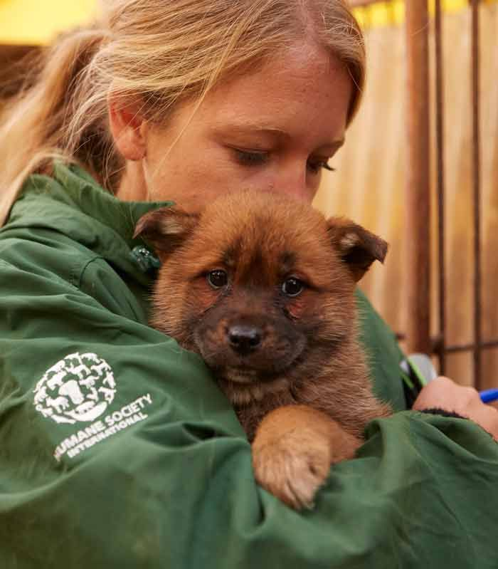

Resgate 24h
Equipe de plantão na cidade.
Resgate · Cuidado · Adoção
Resgatamos, tratamos e adotamos cães, gatos e animais silvestres perdidos. Cada ajuda vira um final feliz.

Plantão para animais feridos
Consultas e castração
Lar seguro e alimentação
Responsável e acompanhada

Sobre nós
Fundada em 2014 por cinco amigos que resgataram uma cadela debaixo de uma ponte, hoje a Vida Animal mantém abrigo, clínica e uma rede de lares temporários.

Equipe de plantão na cidade.

Feiras com castração e vacinas.

Reencontro de animais e tutores.

“Adotei a Bolinha numa feira e hoje ela é da família. Equipe incrível!”Carla S., adotante
Encontrou um animal em perigo? Ligue (11) 4002-8922 ou escreva para contato@vidaanimal.org.